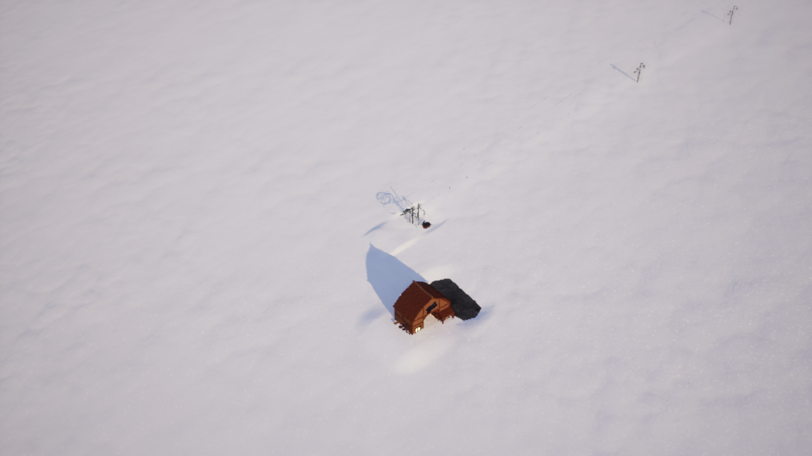

STEP 01
Open a complete example
The mapmod community.surface-lifts adapts an existing native lift. Your map supplies a name, a route and operating settings; the separate mod package supplies its models and behaviour. The standard models need neither Blender nor Unreal Editor. The optional custom-model chapter uses Blender.
Surface lift practice
A 1024 × 1024 m map with one named native lift and a ticket office, plus the separate Surface lifts 0.1.0 source project and its original models. Extract both folders beside each other.
Download the source projects ↓ Read the text guide ↗Install matching current tools and loader using the Windows or Linux installer. Playing requires a reviewed Steam Windows game build, directly or under Linux/Proton. The native macOS game cannot load this Windows DLL-based mod.
In skieomod editor, use Open to choose practice-mountain/custom-map.json. From editor 1.26.0, Help → Surface lift tutorial opens this guide.
STEP 02
Start with one native lift
The downloaded example already contains the lift. To repeat the exercise in your own map, select Source terrain, open Objects and search for the one-seat chairlift: Chair lift (one seat) or Fixed Chair1, class BP_FixedChair1. Click Place on terrain, then its lower and upper terminals. Press Escape to stop placing.
Select the lift, name it Practice platter and save. Its queue, staff assignments and management panel stay native. The mapmod replaces the visible chairlift equipment and adapts its towing line.
| Scene field | Practice value |
|---|---|
| Name | Practice platter |
| Lower X / Y | -80 / 240 metres |
| Upper X / Y | -80 / -240 metres |
The scene source is Scene/objects.json, declared through build.scene.file. The example scene JSON contains the exact objects. Keep the native lift in the scene. New lifts built later during play are not automatically converted.
STEP 03
Let your map request the mapmod
Use File → Show project folder, then open custom-map.json in a text editor. Add this entry to the top-level dependencies array, preserving other dependencies:
{"id": "community.surface-lifts", "version": "=0.1.0"}The ID and version select a separate .skieomod package. Keep that package separate from your .skieomap; leave its default assets and custom-mod.json there. Published maps download their declared dependencies before starting. Your optional replacement models belong to the map itself; see step 7.
STEP 04
Give the towing line its route
Add this top-level extensions fragment to the map manifest, merging it with any existing extensions:
"extensions": {
"community.surface-lifts": {
"lifts": [{
"name": "Practice platter",
"kind": "detachable_platter",
"route": [[-8000, 24000, 0], [-8000, 0, 0], [-8000, -24000, 0]],
"speed_mps": 2.5,
"capacity_per_hour": 600,
"pylons": 4,
"drive": "open",
"return_station": "floating",
"ascent_side": "left"
}]
}
}You can also download just the options. Reopen the project after external edits so the editor cannot save an older in-memory manifest over your changes.
The scene uses metres; the route uses world centimetres. For an ordinary centred editor map, multiply X and Y by 100. Include the world-origin offset if your map uses a custom origin. Every point needs three numbers, but Z is resampled from terrain and snow: 0 is a valid placeholder. Order points from the lower terminal to the upper one and keep them all inside the map.
The first match requires the exact lift name and a lower terminal within 50 m of the first route point. Names must be unique among configured lines. The matched native GUID is then stored in the save.
| Option | Meaning and accepted values |
|---|---|
kind | detachable_platter (TKD, with a stock of poles) or fixed_platter (TKF, rigid poles). |
route | 2–128 points; at most 3 km long. |
speed_mps | 0.5–5 m/s. |
capacity_per_hour | 100–1200 people per hour. |
pylons | 1–32 intermediate supports, excluding the terminals. |
drive | open, covered or modern. |
return_station | floating, release or lattice. |
ascent_side | left or right, looking uphill from the lower terminal. |
max_snow_cm | Optional, 110–300 cm. Default: 150 for TKF, 250 for TKD. |
Keep the first line straight. With exactly pylons + 2 route points, the interior points place the supports and turns above 5° receive bend supports. Otherwise the loader fits supports to the route and terrain. Inspect intentional bends in the game. One session supports at most sixteen configured installations.
STEP 05
Build the separate projects, then play
Open a terminal in the extracted practice folder:
skieomod build surface-lifts
skieomod build practice-mountain --dependency surface-lifts
skieomod run practice-mountain --dependency surface-lifts--dependency locates the mod for local testing; it does not bundle its files into the map. The optional --check-scripts flag needs Lua 5.4 and luac. After installing the local dependency, you can also use the editor's Play button.
Inspect the lower station, the poles and their supports in the game. Add descending trails and complete your resort with the normal construction tools. Open the lift, assign staff and provide guest access and services. Pause and native speed/stop controls still apply.

The whole ascent needs snow. Surface lifts close below 3 cm and reopen after reaching at least 5 cm throughout, subject to manual stop. Excess snow also closes them above the configured limit, with a 20 cm reopening margin. Provide a garage, snowcats and staff for maintenance. The mapmod supplies ascent maintenance corridors; a work request alone does not remove snow.
OPTIONAL · STEP 07
Use your own models
With loader 1.27.0 or newer, your map can replace models for each lift and
individual pylon while continuing to use the published
community.surface-lifts 0.1.0 dependency. Keep its ID and dependency pin;
you do not need to copy, edit or republish the mapmod.
Try the custom-model example
Download the custom-model practice map
and extract practice-custom-models/ beside the original surface-lifts/
project. It contains two native lifts: Practice platter has blue frames
and lower pole casings, with an orange P2 and orange P2 pulleys; Default
platter keeps the stock models. These cosmetic variants retain the original
geometry and attachment points. Their files belong to the map, not the mapmod.
Open practice-custom-models/custom-map.json in the editor, or inspect
its complete extension settings.
From the shared parent folder:
skieomod build surface-lifts
skieomod build practice-custom-models --dependency surface-lifts
skieomod run practice-custom-models --dependency surface-lifts
Select models per lift and pylon
In your map's custom-map.json, add models and optional pylon_models inside
the relevant entry of extensions["community.surface-lifts"].lifts. This is a
fragment to add to an existing lift definition, keeping its name, route,
kind, speed, capacity, pylons and other settings:
"models": {
"drive": "Assets/blue-drive.skpm",
"tower": "Assets/blue-tower.skpm",
"platter_lower": "Assets/blue-platter-lower.skpm",
"palette": "Assets/lift-palette.png"
},
"pylon_models": [{
"index": 2,
"models": {
"tower": "Assets/orange-tower.skpm",
"guide_wheel": "Assets/orange-guide-wheel.skpm"
}
}]
Each model path is relative to your map project. Copy your replacement
meshes and PNGs there, then add every path to the map's content.assets array,
preserving existing entries. Unlike a mapmod manifest, a map does not need a
separate top-level files array. Use / and exact spelling/case. Reopen the
project in the editor after external edits.
The selection order is mapmod defaults → this lift's models → this pylon's
models. Any omitted role inherits its previous value. A lift without
models keeps the original appearance. A models object can replace only one
piece; you do not need to supply all 24 models. drive and return_station
retain their ordinary enum settings (open, covered, modern, etc.); the
model role replaces the mesh chosen by those settings.
index: 1 means the first intermediate pylon from the lower station, 2 means
P2, and so on up to pylons. The two terminals are excluded. Each index may
appear only once. The per-pylon roles are tower, angle_tower,
return_support, return_angle, fixed_return_support, guide_wheel,
chair_tower, chair_head and palette. guide_wheel replaces that pylon's
moving pulleys, including its return-side pulleys when present. A bend uses
angle_tower, so override that role if the target pylon is a bend.
The same settings work for the mapmod's chairlifts entries. Their pylons are
numbered along the route from bottom to top using the actual native supports;
the chosen index must exist. If you change a route or support count, check the
numbering again in a new game.
Available model roles
models key |
Role and selection |
|---|---|
tower, angle_tower |
Ordinary and bend support frames. The reference mast is scaled vertically from a 6 m base height. |
return_support, return_angle, fixed_return_support |
Separate high-return frames and fixed-pole return arms. Preserve their reference attachment positions. |
drive |
Open lower station for detachable_platter with drive: "open". |
covered, modern |
Lower stations selected by drive: "covered" or drive: "modern". |
fixed |
Lower station for fixed_platter with drive: "open". |
return_station, release, lattice |
Upper stations selected by return_station: "floating", "release" or "lattice". |
inclined_wheel, guide_wheel, motor |
Separate rotating wheels and motor. The reference wheel radii are 2 m and 0.8 m, centred at the origin in the XY plane. |
platter |
Complete rigid TKF pole: clamp at the origin, disc about 3 m below it. |
platter_upper, platter_shaft, platter_lower |
Animated TKD clamp/suspension, sliding shaft and lower spring casing with disc. Preserve all three source origins and lengths; the shaft is a 1 cm segment scaled by the animation. |
poles_bundle |
The passenger's carried ski poles. |
chair_drive, chair_return, chair_tower, chair_head |
Frames used by the fixed_chair configuration; native chairs remain native. |
palette |
PNG texture shared by this lift or pylon. |
A palette may be replaced per lift or pylon. It colours the meshes using that bank; the generated cable and support fittings keep the lift palette. PNGs must be square, power-of-two, 8-bit RGB/RGBA images up to 512 × 512 pixels.
The cable, wheel placement, towing poses and telescopic animation are generated by the loader. Keep the reference origins and attachment dimensions when replacing a mesh. Each SKPM is limited to 16 MiB, 150,000 vertices and 450,000 triangle indices. Across the session, the loader permits up to 64 custom meshes and 32 palettes, with all meshes together capped at 32 MiB and 500,000 vertices. Assets reused by several lifts or pylons are decoded/imported once. Keep repeated poles and wheels small.
Create and export a model with Blender
The loader reads .skpm static meshes and PNG palettes. Keep your
.blend files as authoring sources; FBX, OBJ and .blend files are not runtime
lift models. No Unreal cooking or DLL build is needed for a model replacement.
A working exporter and the original geometry definitions are in
tools/build_surface_lift_models.py.
Download a repository source checkout
into a separate work folder. The generator recreates its Blender scene from
Python definitions; it does not read an edited .blend file. Add your geometry
before the final # Keep an immediately usable authoring overview block.
For example, this creates a wider blue mast while keeping the standard support
attachment positions:
box('my footing', (0, 0, .12), (1.1, 1.1, .24), 2)
rod('my blue mast', (0, 0, .24), (0, 0, 6.55), .24, 3, 12)
rod('my crossarm', (0, 0, 6.8), (0, 1.65, 6.8), .09)
rod('my brace', (0, 0, 4.8), (0, 1.6, 6.5), .06)
ladder(.24, -.2, 6.6)
export('my-tower')
With Blender available as blender, run this from the repository checkout:
blender --background --threads 2 --python tools/build_surface_lift_models.py
Copy the generated mod/SkiEO-SurfaceLifts/Assets/my-tower.skpm into
practice-mountain/Assets/my-tower.skpm. This example uses the unchanged palette
shipped by the mapmod, so this mesh does not need a custom palette entry. The script also writes build/surface-lifts/models.blend
as a visual overview. Its collections are spread apart for inspection after
export; those overview offsets must not enter your runtime meshes.
The supplied exporter uses metres in Blender, bakes object transforms, then
writes centimetres with (x, -y, z) coordinates and reflected normals. Model
local X runs along the line, Z points up, and the loader handles rotation and
left/right mirroring. Keep the source model's local origin and attachment
positions: a tower is anchored at its foot, a station at its route-terminal
reference, a wheel at its centre and a pole at its cable clamp. Do not centre
each object independently before export.
For hand-modelled meshes, reuse the script's export(name) routine in your
Blender authoring script with your mesh objects in parts, the output folder
in OUT, and the palette materials in mats. Each object's first material
must belong to mats. This exporter assigns a palette colour per object; it
does not export Blender shader graphs or an existing UV unwrap. Edit PALETTE
and regenerate palette.png if you need different colours; replacing the
shared palette changes every model using those colours.
Test, save and publish your map
Inspect both terminals, a straight support, bends, moving wheels and occupied and empty poles. Test in a new game and after saving/reloading. The normal native identities and management data remain unchanged; appearance is rebuilt from the map's configuration on loading.
If a mesh is missing, check its path and content.assets; invalid paths,
unknown roles, duplicate pylon indices and malformed SKPMs stop loading with an
error. Files are read from the map's declared assets, even if the mapmod has a
file with the same name. If a model floats or misses the cable, compare its
origin and dimensions with the original.
Increase your map version, rebuild and publish it using skieomod publish practice-custom-models (choose your own map ID before publishing the practice
project). Players receive your replacement assets with the map and download
the shared mapmod separately. A mapmod fork is useful only if you want to
change its behaviour rather than supply different models.
TROUBLESHOOTING
When the line does not behave as expected
The original chairlift is still visible
Check the dependency, exact name, centimetre conversion and lower terminal. Inspect UE4SS.log for Surface lifts: 1 native installations adapted. Check that loading finished successfully.
The lift will not run
Check snow along the entire ascent, hours, staff, manual stop and maintenance. A missing station model does not explain an ordinary native operating restriction.
The new configuration is absent in a saved game
The saved lift position and GUID remain authoritative. Start a new game after editing the authored scene. A deleted saved lift is intentionally not recreated.
The route or supports look wrong
Check lower-to-upper point order, world centimetres, map boundaries, ascent side, support count and terrain. Begin with a straight route before adding surveyed bends.
The game build is refused
Update the tools and loader. The native helpers require a reviewed game build; changing DLL names or disabling guards does not provide compatibility.
For implementation details, see the surface-lift reference. Ordinary maps use the options above: the dependency calls api:configure_surface_lifts once after loading, so the map should not call it a second time.